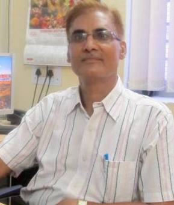

Dr. P. C. Pandey

About Me
Joined Banaras Hindu University in 1985 and worked as Lecturer, Senior Lecturer and Reader at Department of Chemistry, BHU. Joined the current department in 2004 as Professor of Chemistry.
Recent Publications
Representative Publications on Microporous membrane matrixes.
- P. C. Pandey , A new Conducting polymer coated glucose sensor, J. Chem. Soc. Faraday Trans. I. 84 (1988) 2259-2265.
- P. C. Pandey & R. Prakash, Electrochemical synthesis of polyindole-a study for rechargeable battery application, J. Electrochem. Soc. 145 (1998) 999-1003.
- P. C. Pandey & R. Prakash, Polyindole modified potassium ion sensor using dibenzo-18-crown-6 mediated PVC matrix membrane, Sensors & Actuators. B46(1998) 61-65.
- P. C. Pandey & R. Prakash, Characterization of electropolymerized polyindole-application in the construction of a solid-state Ion-Selective electrode, J. Electrochem. Soc. 145(1998) 4103-4107.
- P. C. Pandey & G. Singh, Tetraphenylborate doped polyaniline based novel pH sensor and solid-state urea biosensor, Talanta 55( 2001) 773-782 .
- P. C. Pandey & G. Singh , Electrochemical Synthesis of Tetraphenylborate Doped Polypyrrole; Dependence of Zinc ion sensing on the Polymeric-microstructure, Sensors & Actuators 85/3 (2002) 256 - 262
- P. C. Pandey & G. Singh , Electrochemical synthesis of polyaniline in proton free non-aqueous mediums; effects of solvents and dopants on microstructure, J.Electrochem. Soc 149( 2002) D51-D56.
- P C Pandey and V. singh "Electrochemical polymerization of aniline over tetracyanoquinodimethane encapsulated ormosil matrix: application in the electrocatalytic oxidation of ascorbic acid and acetylthiocholine" Analyst, 136(2011)1472.
- P. C Pandey, D S Chauhan and V. Singh, Effect of processable polyindole and nanostructured domains on selective sensing of dopamine, Material Science and Engineering: C, 32 (2012)1-11.
Representative Publications on Nanostructured membrane matrixes
- P. C. Pandey , S. Upadhyay & H. C. Pathak, A new glucose biosensor based on encapsulated glucose oxidase within organically modified sol-gel glass, Sensors & Actuators. B60(1999)83-89.
- P. C. Pandey , S. Upadhyay, & H. C. Pathak, A new glucose Biosensor based on sandwiched configuration of organically modified sol-gel glass, Electroanalysis 11(1999) 59-65.
- P. C. Pandey , S. Upadhyay, & H. C. Pathak, A new ferrocene-linked organically modified electrode sol-gel glass and its application in the construction of Ion-selective electrode, Electroanalysis 11(1999) 950-958.
- P. C. Pandey , S. Upadhyay, Ida Tiwari & V. S. Tripathi, An ormosil based peroxide biosensor-A comparative study on direct electron transfer from Horseradish peroxidase, Sensors & Actuators 72 (2001) 224-232
- P. C. Pandey , S. Upadhyay, Ida Tiwari & S. Sharma, A Novel Ferrocene Encapsulated Palladium-Linked Ormosil based Electrocatalytic Biosensor; Role of Reactive Functional Group, Electroanalysis 13 (18) (2001) 1519-1527.
- P. C. Pandey , S. Upadhyay and S. Sharma , Functionalized ormosil-based biosensor. Probing a Horseradish peroxidase catalyzed reactions, J. Electrochem. Soc. 150 (2003) H85-H92.
- P. C. Pandey , S. Upadhyay, N. K. Shukla & S. Sharma, Studies on the Electrochemical Performance of Glucose Biosensor based on Ferrocene encapsulated ORMOSIL and Glucose Oxidase Modified Graphite Paste Electrode, Biosensors & Bioelectronics 10 (2003)1257-1268
- P C Pandey and S.Upadhyay, Chemical sensors based on fuctionalized ormosil-modified electrodes- Role of ruthenium and palladium on the electrocatalysis of NADH and Ascorbic acid. Sensors & Actuators B, 102 (2004) 113-126
- P C. Pandey, B. C. Upadhyay and A. K. Upadhyay "Differential selectivity in electrochemical oxidation of ascorbic acid and hydrogen peroxide at the surface of functionalized ormosil-modified electrode, Anal.Chim.Acta, 523/2 (2004) 219-223.
- P C. Pandey, S.. Upadhyay and B. C.. Upadhyay "Studies on ne omosils derived from reactive alkoxysilane precursors as a function of hydrophobicity/hydrophilicity" Journal of sol-gel science and technology, 33 (2005)25-32.
- P. C. Pandey and B. C. Upadyay, Role of palladium on the redox electrochemistry of ferrocene monocarboxylic acid encapsulated within ormosil network, J. Molecules, 10 (2005) 728-739
- P. C. Pandey and B. C. Upadyay, Studies on differential sensing of dopamine at the surface of chemically sensitized ormosil-modified electrodes, Talanta, 67/5 (2005) 997-1006.
- P C Pandey and b. singh, "Library of Electrocatalytic sites in nanostructured domain, Biosensors & Bioelectronics, 24 (2008) 848-858.
- P.C. Pandey and Arvind Prakash, Electrochemistry of redox mediators encapsulated within organically modified silicate matrix in the presence of TiO2 and palladium nanoparticles; application on electroanalysis of ascorbic acid, J.Electroanal.Chem., 729(2014)95-102.
Representative Publications on Functional Nanomaterials
- P. C Pandey and D S Chauhan, 3-Glycidoxypropyltrimethoxysilane mediated in situ synthesis of noble metal nanoparticles: application to hydrogen peroxide sensing. Analyst, 137(2012)376-385.
- P C Pandey* and Ashish K Pandey , Size-dependence enhancement in electrocatalytic activity of NiHCF-goldnanocomposite: potential application in electrochemical sensing, Analyst, 137(2012)3306-3313.
- P C Pandey* and Ashish K Pandey, "Cyclohexanone and 3-aminopropyltrimethoxysilane mediated controlled synthesis of mixed nickel-iron hexacyanoferrate nanosol for selective sensing of glutathione and hydrogen peroxide"Analyst, 138(2013)952-959.
- P C Pandey* and Ashish K Pandey, "Novel synthesis of super peroxidase mimetic polycrystalline mixed metal hexacyanoferrates nanoparticles"Analyst, 138(2013)2295-2301.
- P C Pandey* and Ashish K Pandey, "Novel synthesis of Prussian blue nanoparticles and nanocomposite sol: Electro-analytical application in hydrogen peroxide sensing", Electrochimica Acta, 87 (2013)1-8.
- P C Pandey* and Ashish K Pandey, Electrochemical sensing of dopamine and pyrogallol on mixed analogue of Prussian blue nanoparticles modified electrodes - role of transition metal on the electrocatalysis and peroxidase mimetic activity, Electrochimica Acta, 109 (2013)536-545.
- P C. Pandey*, A. K. Pandey and Gunjan Pandey, Functionalized alkoxysilane mediated controlled synthesis of noble metal nanoparticles dispersible inaqueous and non-aqueous medium" J. Nanosci. Nanotechnol., 2014, 14, 6606-6613.
- P C. Pandey*, and Gunjan Pandey "Tunable functionality and nanogeometry in tetrahydrofuran hydroperoxide and 3-Aminopropyl-trimethoxysilane mediated synthesis of gold nanoparticles; Functional application in Glutathione sensing, J. Mater. Chem. B, 2(2014))3383-3390.
- P C Pandey* and Richa Singh,. Controlled Synthesis of Functional Silver Nanoparticles Dispersible in Aqueous and Non-Aqueous Medium",J.Nanosci.Nanotechnol.,2014 in press, doi:10.1166/jnn.2014.10045
- P C Pandey* and Richa Singh, Tetrahydrofuran hydroperoxide and 3-Aminopropyltrimethoxysilanemediated controlled synthesis of Pd, Pd-Au, Au-Pd nanoparticles: Roleof Palladium nanoparticles on the redox electrochemistry of ferrocenemonocarboxylic acid, Electrochimica Acta, 138 (2014)163-173.
- P C Pandey* and Ashish K Pandey, Tetrahydrofuran hydroperoxide mediated synthesis of Prussian blue nanoparticles: a study of their electrocatalytic activity and intrinsic peroxidase-like behavior, Electrochimica Acta, 125 (2014)465-472.
Representative Publications on Electrochemical sensors/Biosensors
- P.C. Pandey and A.P. Mishra, Conducting polymer coated enzyme microsensor for urea, Analyst (Lond.) 113 (1988) 329-331.
- C. Tran-Minh, P. C. Pandey & Satish Kumaran, Studies on Acetylcholine Sensor and its application based on the inhibition of cholinesterase, Biosensors & Bioelectronics 5 (1990) 461-47
- P. C. Pandey, C. Tran-Minh, & F. Lantreibecq, Electrochemical Studies on Tetrathiafulvalene-Tetracyanoquinodimethane modified Acetylcholine/Choline sensor, Appl. Biochem. Biotech. 31 (1991) 145-158.
- P. C. Pandey, A. M. Kayastha & V. Pandey, An amperometric Biosensor for glucose based on tetracyanoquinodimethane modified graphite paste electrode, Appl. Biochem. Biotech. 33 (1992) 139-147.
- P. C. Pandey, S. Glazer & H. H. Weetall, An amperometric flow-injection analysis biosensor for glucose based on graphite paste modified with tetracyanoquinodimethane, Anal. Biochem. 214 (1993) 133-137
- P. C. Pandey & H. H. Weetall , Application of photochemical reaction in electrochemical detection of DNA Intercalation, Anal. Chem. 66 (1994) 1236-1241.
- P. C. Pandey, Tetracyanoquinodimethane mediated flow-injection analysis sensor for NADH coupled with dehydrogenase enzymes, Anal. Biochem. 221 (1994) 392-396.
- P. C. Pandey & H. H. Weetall, Peroxidase and Tetracyanoquinodimethane modified graphite paste electrode for the measurement of glucose/glutamate/lactate using enzyme packed bed reactor, Anal. Biochem. 224 (1995) 428-433.
- P. C. Pandey, S. Upadhyay & B. Upadhyay , Peroxide bisensor and mediated electrochemical regeneration of peroxidase, Anal. Biochem. 252 (1997) 136-142.
- P. C. Pandey, S. Upadhyay, & H. C. Pathak, Ethanol Bisensor and electrochemical regeneration of NADH, Anal. Biochem. 260 (1998) 195-203.
- P. C. Pandey , S. Upadhyay , H. C. Pathak, C. M. D. Pandey & Ida Tiwari Aacetylthiocholine/acetylcholine and thiocholine/choline electrochemical biosensor/sensor based on a organically modified sol-gel glass enzyme reactor and graphite paste electrode Sensors & Actuators. B62(2000)109-116.
- P. C. Pandey & S. Upadhyay, An electrocatalytic biosensor for glucose, Sensors & Actuators 78( 2001) 148-155.
- P. C. Pandey* , S. Upadhyay, N. K. Shukla & S. Sharma, Studies on the Electrochemical Performance of Glucose Biosensor based on Ferrocene encapsulated ORMOSIL and Glucose Oxidase Modified Graphite Paste Electrode, Biosensors & Bioelectronics 10 (2003)1257-1268.
- P. C Pandey and D S Chauhan "Calcium ion-sensor based on polyindole-camphorsulfonic acid composite" J.Appl. Poly.Sci., 125(2012)2993-2999.
Representative Publications on Membrane transport processes
- R. P. Rastogi, R. C. Srivastava, P. C. Pandey, A. R. Singh & A. P. Mishra, Non-linear dynamics of membrane processes, J. Colloids & Interface Sci.. 175 (1995) 262-275.
- R. P. Rastogi, G. P. Misra, P. C. Pandey, K. Bala & K. Kumar, Bistability and electrokinetic oscillations, J. Colloids & Interface Sci.. 217 (1999) 275-287.
Representative Publications on Photoelectrochemical Processes
- R. P. Rastogi, Ram Shabd, B. M. Upadhyay, S. B. Singh & P C Pandey,, Photoelectric effects in Chlorophyll Membranes, J. Membrane Sci., 19 (1984) 51-73.
- P. C. Pandey & H. H. Weetall, Detection of aromatic hydrocarbon based on DNA Intercalation using an Evanescent wave biosensor, Anal. Chem. 67 (1995) 787-792.
- P. C. Pandey , S. Singh, B. Upadhyay, H. H. Weetall & P. K. Chen, Reversal in he kinetics of M-state decay of D96N mutant Bacteriorhodopsin, Sensors & Actuators. B35-36(1996) 270-276.
- P. C. Pandey , B. Upadhyay, H. C. Pathak & C. M. D. Pandey, Dependence of M, N, and O states decay kinetics of D96N mutant bacteriorhodopsin on amino and amine compounds; application in chemical sensing, Sensors & Actuators. B46(1998) 80-86.
- P. C. Pandey , B. Upadhyay, H. C. Pathak & C. M. D. Pandey, Electrochemical studies on D96N mutant bacteriorhodopsin and its application in the construction of photosensor, Sensors & Actuators. B56(1999)112-120.
- P C. Pandey, S.. Upadhyay and B. C.. Upadhyay "Photo-electrochemistry of ormosil sandwiched d-96n bacteriorhodopsin" Journal of sol-gel science and technology 33 (2005)51-58.
- P. C. Pandey, Bacteriorhodopsin - Novel biomolecule for nano devices Anal.Chim.Acta, 568 (1-2): 47-56 MAY 24 2006.
- P.C.Pandey, Richa Singh and Digvijay K Pandey, "Extraction and Purification of Purple Membrane for Photochromic Thin Film Development: Application in Photoelectrochemical Investigation" Appl. Biochem. Biotechnol. 168(2012)138-146.
Book Chapter
- P C Pandey, "Enzyme Biosensors based on mediator-modified carbon paste electrode" Methods in Biotechnology, Enzyme and microbial biosensors" Ashok Mulchandani and Kin R.Rogers (Eds.), Humana Press Inc, Totowa, New Jersey, 1998.
- P C Pandey, Ormosil Based Biosensors, in Chemical and Biological Sensors for Environmental Monitoring, Ashok Mulchandani and O.A. Sadik (Eds.) ,ACS symposium series 762 Book, 2ISBN-0-8412-3687-9 2000,
- P C pandey, in Encyclopedia of sensors, Craig A. Grimes, Elizabeth C. Dickey, and Michael V. Pishko (eds.), The Pennsylvania State University, University Park, USA, ISBN: 1-58883-056-X, American Scientific Publisher, 2005.
- P C pandey, Recent advances in the role of nanostructured networks as analytical tools for biological systems, Encyclopedia of sensors for biomedical applications, Frontiers in Bioscience (Elite edition) 5: 2013 pg 622-642, DOI No:10.2741/E644].
Patent
- P. C. Pandey, Amperometric flow injection analysis biosensor for glucose based on graphite paste modified with tetracyanoquinodimethane, U. S. Patent, 5, 378, 332, 1995.
- P. C. Pandey, A novel solid-state Biosensor and a process for producing the same, IP 191792, 2002.
- P. C. Pandey, A Biosensoe for dopamine and Acetylcholine, IP, 196763, 2004.
- P. C. Pandey, A process for the preparation of novel enzyme encapsulated organically modified sol-gel glass based glucose biosensor, IP, 190841, 1999.
- P. C. Pandey, S. Upadhyay, H. C. Pathak and C. M. D. Pandey, A process for making ferrocene encapsulated ormosil, IP, 196900, 1999.
- P. C Pandey, R. Prakash, R. C. Srivastava and P. K. Seth, All solid-state K+ ion sensor, Indian Patent, 215512.
- P. C Pandey, R. Prakash, R. C. Srivastava and P. K. Seth, All solid-state Cu++ ion sensor, Indian Patent, 221601.
- P. C Pandey, R. Prakash, R. C. Srivastava and P. K. Seth, All solid-state pH sensor, Indian Patent, 218340.
- P. C Pandey, R. Prakash, R. C. Srivastava and P. K. Seth, All solid-state urea sensor, Indian Patent, 215383.
- P C Pandey, et al, calcium ion-sensor comprising ionophore/carrier ion -free polyindole-camphor sulphonic acid composite, 2383/DEL/2010.
- P C Pandey, et al, a process for making disposable glucose sensor strips and a glucose biosensor made therefrom, 2381/DEL/2010
- P C Pandey, et al, a process for making improved glucose sensor strips and a glucose biosensor made therefrom, 2416/DEL/2010
- P C Pandey, et al, a process for insitu generation of noble metal nanoparticles and thereafter coreshell of the same, 2382/DEL/2010
- P C Pandey and R. Singh "A process for the development of photochromic thin film of purple membrane of variable thickness and isolation of purple membrane for the same" indian patent. 3894/DEL/2011.
- P. C Pandey, A.K.Pandey, D. S Chauhan, A process for 3-aminopropyltrimethoxy silane and cyclohexanone mediated synthesis of Prussian blue nanoparticle sol and nanocomposite of the same. Indian Patent , 64/DEL/2012
- P. C. Pandey, . A PROCESS FOR THE ORGANIC HYDROPEROXIDE-MEDIATED SYNTHESIS OF NOBLE METAL NANOPARTICLES, BIMETALLIC NANOSOL AND PRUSSIAN BLUE NANOPARTICLES THEREFROM, 2153/DEL/2013.
Academic Profile
-
Academic Profile
- Ph.D. Gorakhpur University [1986]
- M.Sc.: Gorakhpur University [1980]
-
Professional Profile
- Visiting Professor: Moscow State University, Russia [2009 - 2010]
- Visiting Professor: Institut de microtechnique, Neuchâtel, Switzerland [2007 - 2008]
- Visiting Professor: University of California, Riverside [2001 - 2002]
-
Visiting Faculty
- PostDoc: National Institute of Standards and Technology, USA [1992 - 1994]
- PostDoc: Ecole des Mines, St. Etienne, France [1989 - 1990]
-
Country Visited
- France, England, USA, Germany, Switzerland, Belgium, Australia, Russia
-
Teaching Interest
- Analytical Chemistry, Sensors Technology, Electrochemical sensors, Biosensors, Membrane transport phenomena
Research Interests
- Thin film Technology: Both microporous and nanoporous membrane matrixes specifically useful for sensor design are one of area of interest. The use of heterocyclic monomers specifically indole and its derivatives through electropolymerization yielding the polymeric matrix with extreme hydrophobicity at one end and processable hydrophilic polymer on other end is of specific attention. Electropolymerization of other monomers resulting into ion sensing membrane and the use of PVC matrx membrane for solid-state sensor design are of general interest. Nanostructured thin film as organically modified silicate (ORMOSIL) derived from the specific interaction of organic amine and epoxy-groups linked to alkoxysilane has been our main area of interest. The use of reactive organic functionalities in anchoring the noble metal material like palladium through Pd-C and Pd-Si linkage within nanostructured network or encapsulation of nanomaterial/functional material within the nanoporous morphology of ormosil film during sol-gel processing yielding library of electrocatalytic sites within nanostructured domain for specific applications and the use of metal oxide like TiO2 and WO2 for controlling the performances of ormosil film are of current interest.
- Functional Nanomaterials : The role of organic amine linked to alkoxysilane precursor along with active oxygen containing organic molecules in the synthesis of Au, Ag Pd, Au-Pd, Pd-Au nanoparticles dispersible in a variety of aqueous and non-aqueous solvents displaying both functional ability and nanogeometry during sensor design is of our prime attention. Synthesis of other functional material like processable Prussian blue nanoparticles and it soluble nanocomposite displaying enzyme like behaviour for perfect replacement of HRP is another area of current interest.,
- Development of Commercial Electrochemical sensors/Biosensors: Our prime attention is to probe the sensing event at measurable rate based on electrochemical processes for reliable electrochemical biosensor design having commercial viability involving active role of electron transfer relays, nanomaterials/functional nanomaterials.(see details at http://sensors-vns.com/ Technological designs include our interest on investigating mass and charge transport across membrane matrixes under both linear and non-linear regime and photoelectrochemistry of chlorophyll, bacteriorhodopsin and Prussian blue-ruthenium bipyridyl nanocomposite. The development of display system with suitable electronics along with designing of printed circuit board as per requirement of sensing devices is of concern.
Awards and Honours
- Awarded one time grant by University Grants Commission
Contact Me
- pcpandey.apc@iitbhu.ac.in
- 0542-6702880
9415813018 - Department of Chemistry Indian Institute of Technology (Banaras Hindu University) Varanasi - 221 005